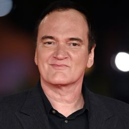
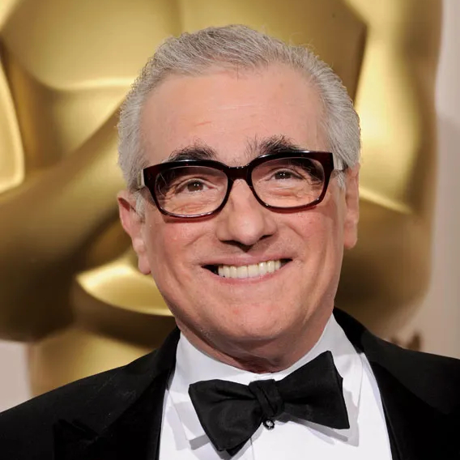
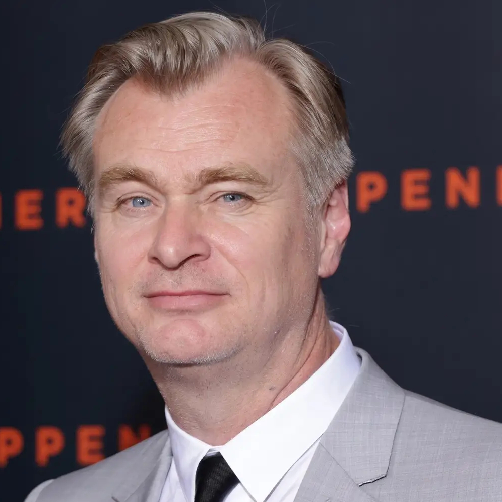

Página creada por Roberto Pecurto
Bienvenid@ a mi página de recomendación de películas. Aquí podrás descubrir tus nuevas películas favoritas que se adapten a tus gustos. En un mundo lleno de opciones digitales para ver películas, aún hay muchos clásicos por descubrir. Por eso, he creado este catálogo especialmente para ti. Prepárate para explorar y sumergirte en un maravilloso mundo de cine
A continuación se mostrará una lista con los directores más famosos de los últimos tiempos y sus grandes obras ordenadas por popularidad.
| Quentin Tarantino  | Nacido el 27 de marzo de 1963 en Knoxville, Tennessee, es un influyente director, guionista y productor de cine estadounidense. Su estilo distintivo se caracteriza por diálogos afilados, referencias pop-culturales y narrativas no lineales. Ganador de varios premios, incluyendo dos premios de la Academia, Tarantino ha dejado una marca indeleble en la industria cinematográfica. |
|---|---|
| Martin Scorsese  | Nacido en el barrio de Queens, Nueva York, el 17 de noviembre de 1942, es un director de cine de la vieja escuela que ha dejado una marca indeleble en la historia del cine. Con su estilo inconfundible y su pasión por contar historias auténticas, ha conquistado corazones y mentes en todo el mundo. Su influencia en el cine contemporáneo es enorme y sus películas son un testimonio perdurable de su genio creativo. |
|---|---|
| Christopher Nolan  | Nacido en Londres en 1970, Christopher Nolan se ha ganado el reconocimiento como un director de cine que desafía las convenciones y redefine los límites narrativos y visuales con cada una de sus películas, creando historias que no solo entretienen, sino que también hacen reflexionar al público sobre la complejidad del ser humano y el universo que nos rodea. |
|---|---|